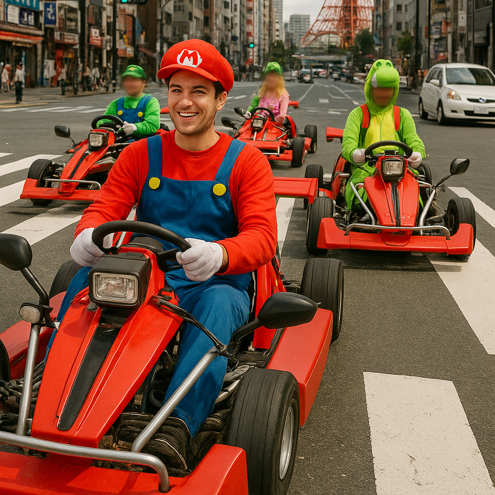

Go-Kart fahren in Japan – Einzigartige Touren durch die Straßen von Tokio
Erleben Sie den Nervenkitzel, selbst ein Go-Kart durch die lebhaften Straßen von Tokio zu steuern – eine außergewöhnliche Möglichkeit, die japanische Hauptstadt aktiv zu entdecken. Diese geführten Kart-Touren verbinden Sightseeing mit Abenteuer und bieten ein unvergessliches Erlebnis mitten im Großstadtverkehr.
Was Sie bei einer Go-Kart-Tour erwartet
Die Touren sind sowohl für Anfänger als auch für erfahrene Fahrer geeignet. Beliebte Routen führen durch bekannte Stadtteile wie Shibuya, Akihabara und Odaiba. Vom Fahrersitz aus erleben Sie Tokios urbane Energie aus einer völlig neuen Perspektive.
Fahrzeuge und Sicherheit
Alle Go-Karts sind straßenzugelassen und entsprechen den japanischen Verkehrsbestimmungen. Vor Beginn erhalten Sie eine ausführliche Einweisung sowie Sicherheitsausrüstung. Erfahrene Guides begleiten jede Gruppe, um einen sicheren und reibungslosen Ablauf zu gewährleisten.
Tour-Optionen und Buchung
Es stehen verschiedene Tourvarianten zur Verfügung – von einstündigen Fahrten bis zu längeren Erlebnissen. Individuelle Routen können je nach Interesse gewählt werden, beispielsweise mit Fokus auf Shopping-Viertel, Sehenswürdigkeiten oder Entertainment-Bezirke. Auch private Gruppentouren sind möglich.
Teilnahmevoraussetzungen
Startpunkte befinden sich in zentralen Bezirken wie Shinjuku oder Shibuya und sind gut mit öffentlichen Verkehrsmitteln erreichbar. Voraussetzung ist ein gültiger internationaler oder japanischer Führerschein. Eine frühzeitige Reservierung – besonders an Wochenenden und Feiertagen – wird empfohlen.
Warum Go-Kart fahren in Tokio?
Diese Aktivität kombiniert Spaß, Adrenalin und Sightseeing auf einzigartige Weise. Ideal für Reisende, die nach einer besonderen Tokio-Aktivität suchen oder ihre Japanreise um ein außergewöhnliches Erlebnis erweitern möchten.
Wichtige Informationen
- 🌸 Startpunkte: Shinjuku, Shibuya oder Odaiba
- 🌸 Tourzeiten: 9:00 – 18:00 Uhr (abhängig von der Tour)
- 🌸 Voraussetzung: Gültiger internationaler oder japanischer Führerschein
- 🌸 Mitzubringen: Bequeme Kleidung, Führerschein, Sonnenbrille
Tags: Go-Kart Tokio, Go-Kart fahren Japan, Tokio Aktivitäten, Stadttour Tokio, außergewöhnliche Aktivitäten Japan
Planen Sie eine Go-Kart-Tour in Japan?
Für ein sicheres und perfekt organisiertes Erlebnis empfehlen wir die Buchung eines zertifizierten privaten Guides aus unserem Team. Alle Guides sind offiziell vom japanischen Staat anerkannt und bieten individuell zugeschnittene Touren entsprechend Ihrer Interessen an. Kontaktieren Sie Ihren Guide im Voraus, um die Verfügbarkeit zu bestätigen und professionelle Unterstützung für Ihre Reise zu erhalten.